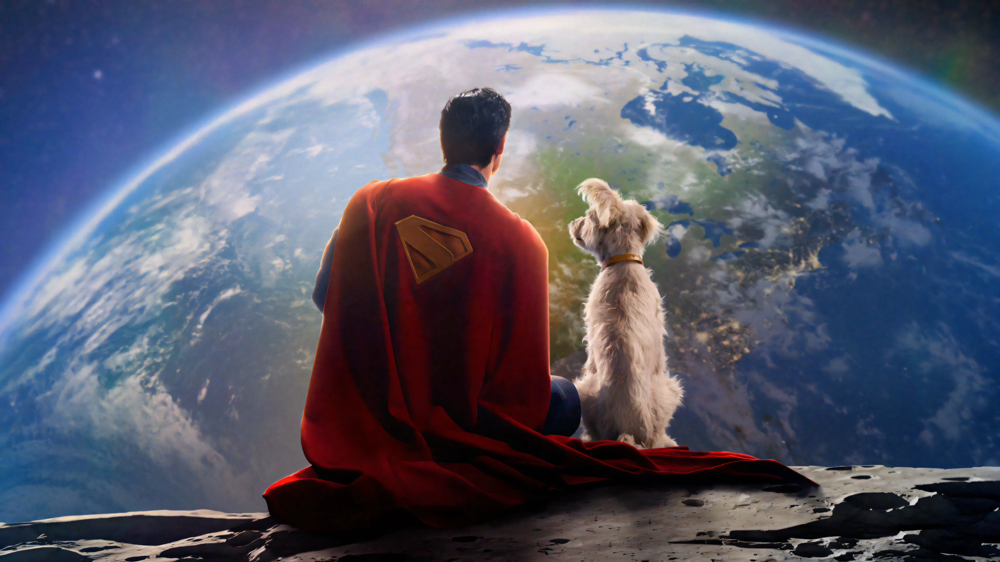
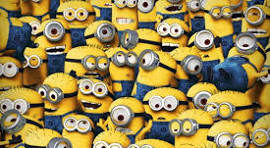

Cores e Significados nos Filmes
 Divertida Mente 2
Divertida Mente 2
Azul – Tristeza e Calma
Representa a melancolia, introspecção e serenidade. Usado para transmitir emoções profundas e sensíveis.
Amarelo – Alegria e Energia
Reflete felicidade, brilho e entusiasmo. É a cor da personagem Alegria e indica vitalidade emocional.
Verde – Nojo e Equilíbrio
Simboliza repulsa e proteção, mas também equilíbrio emocional e senso crítico.
Vermelho – Raiva e Intensidade
Expressa frustração, poder e ação explosiva. É a cor da personagem Raiva.
Roxo – Medo e Mistério
Cor do personagem Medo. Representa alerta, tensão e intuição.
 Superman
Vermelho – Força e Coragem
Cor do poder, bravura e determinação. Em Superman, evoca ação e liderança.
Azul – Justiça e Segurança
Simboliza confiança, lealdade e proteção. É a base da identidade visual do herói.
Amarelo – Esperança e Luz
Ilumina o traje do herói com um senso de esperança, pureza e otimismo.
 Minions
Amarelo – Diversão e Caos
Cor principal dos Minions. Representa bom humor, inocência e personalidade extrovertida.
Azul – Energia e Curiosidade
O macacão azul complementa o amarelo com senso de ação, movimento e jovialidade.